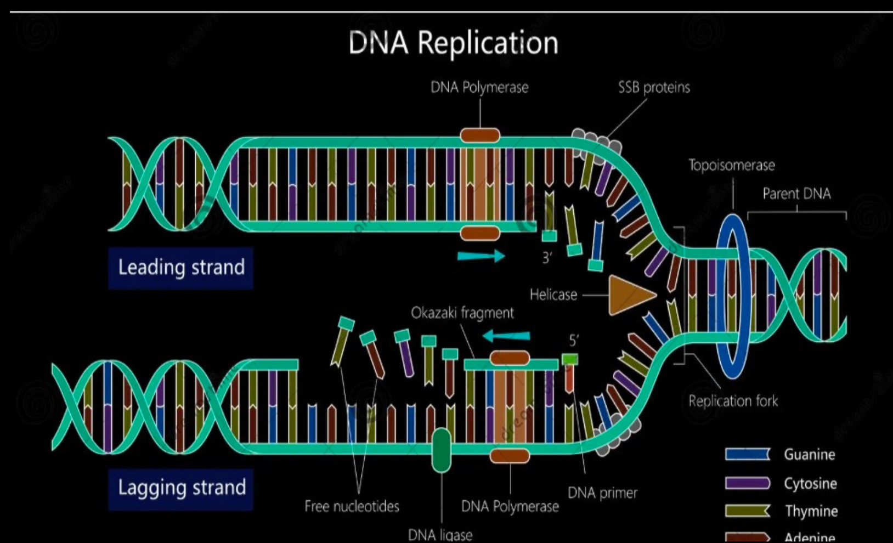

What is DNA Replication?
- DNA replication is the process by which a cell makes an exact copy of its DNA before cell division.
- It is semi-conservative:
Each new DNA molecule has one original strand and one newly made strand.
Direction of Replication
- New DNA strands are always built in the 5' → 3' direction.
- This means new nucleotides are added to the 3' end of the growing strand!
Key Enzymes (In Order of Function)
| Enzyme |
Function |
| Helicase |
Unzips the double helix by breaking hydrogen bonds between bases. |
| Single-Strand Binding Proteins (SSBs) |
Keep the two DNA strands apart to prevent rejoining. |
| Topoisomerase |
Relieves tension ahead of the replication fork by cutting and rejoining DNA. |
| Primase |
Lays down a short RNA primer to provide a starting point. |
| DNA Polymerase III |
Main enzyme that adds nucleotides in the 5' → 3' direction. |
| DNA Polymerase I |
Removes RNA primers and replaces them with DNA nucleotides. |
| DNA Ligase |
Seals gaps between Okazaki fragments to create one continuous strand. |

Leading and Lagging Strand
- Leading Strand:
- Synthesized continuously toward the replication fork.
- Only one primer needed.
- Lagging Strand:
- Synthesized discontinuously away from the fork.
- Made in small sections called Okazaki Fragments.
- Each fragment needs its own primer.
Reason:
DNA polymerase can only add nucleotides 5' to 3', so the lagging strand must be made in pieces as the fork opens.
Okazaki Fragments
- Short segments of newly synthesized DNA on the lagging strand.
- Later joined together by DNA ligase.
üéØ Pro Tip
- Both strands are copied at the same time, but differently!
- Remember: Leading = Continuous, Lagging = Fragments.
- Okazaki fragments = Signature of the lagging strand.
Written by Kasiban Parthipan